<a href="index.html">← back</a>
Æ - Sound, research and participatory design practice by Aldo Scarpitta and Marco Berni
Æ
<p>2025 –</p>
<p>Aldo Scarpitta and Marco Berni + Marco De Francesca</p>
<br>
<p>Born from the artistic residency Indagine Milano, Festival IMMERSIONI 2025</p>
<p>produced by Mare Culturale Urbano in partnership with Piccolo Teatro di Milano</p>
<br>
<p>Sound moves through us before we notice it. It arrives uninvited, travels around corners, settles in spaces between thoughts. Hearing is the physical process that enables perception. Listening is paying attention to what is perceived: acoustically, psychologically, relationally.
This practice explores sound as a connective medium between places and people, drawing from Pauline Oliveros's four modes of consciousness: emotional memory, bodily sensation, intuition, cognitive analysis. We add the relational dimension. Through collaborative listening, we investigate how neighbourhoods speak, how attention reshapes belonging, how the urban environment becomes both research tool and creative medium for collective experience.
Your ears become instruments of exploration. Your body and memory contribute to drawing the soundscape of the territory. We invite you to map the invisible architectures that sound creates: how morning rhythms shape your day, how voices change the atmosphere of a space, how silence contains meaning.
Space always speaks. Are you listening?</p>
<img src="ae-cover.jpg">
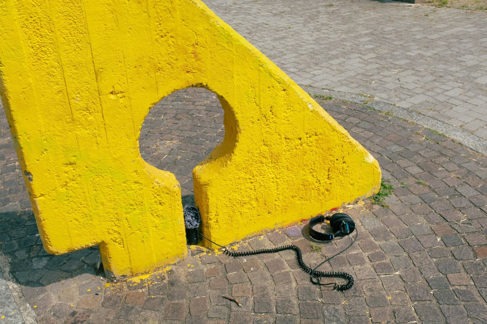
<h3>The Three Phases</h3>
<br>
<p>Phase One: Community activation through distribution of "cultural probes": listening kits given to residents who become co-researchers documenting their daily acoustic environment. Not passive subjects, but active investigators of their own sonic territories.</p>
<p>Phase Two: Transdisciplinary workshops, collaborative construction of listening journals, exploratory soundwalks, performative activities interpreting urban space through body, voice, shared writing. Testing and iterating the tools while documenting social interactions, lived experiences, collective memories embedded in local soundscapes.</p>
<p>Phase Three: Participatory artistic outcomes, co-creation of care-oriented cultural events that transform collected acoustic data into site-specific experiences. These outcomes leverage sound traces of social interactions and collective memories, designed in response to each specific context and community. The form emerges from the process – performative walks, immersive installations, sonic interventions – transforming everyday territorial experience into shared artistic events that foster new perspectives and sense of belonging.</p>
<img src="ae-phases.jpg">
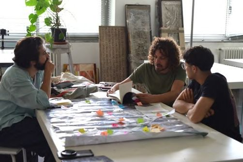
<h3>Passæggi Sonori</h3>
<p>Gallaratese, Milan</p>
<img src="ae-gallaratese-map.jpg">
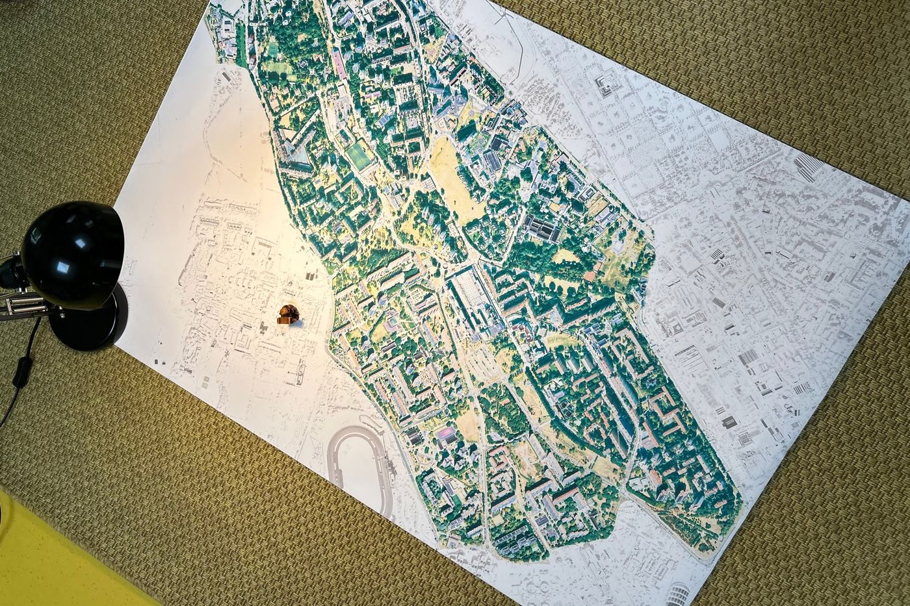
<br>
<p>may</p>
<p>Complesso Monte Amiata – Carlo Aymonino / Aldo Rossi</p>
<img src="ae-monte-amiata.jpg">
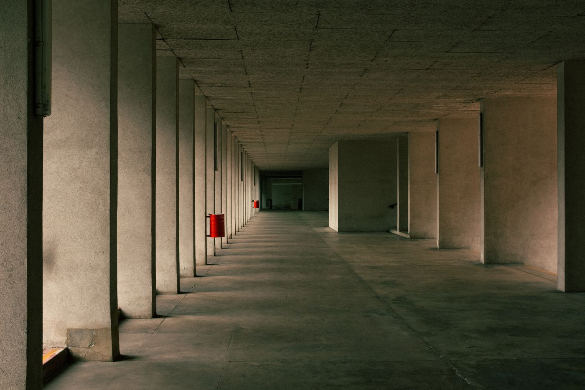
<a href="https://on.soundcloud.com/GLfqqe9rtBuDG2RDzW">recording I</a>
<a href="https://on.soundcloud.com/nBiynQySYVeWenjFyB">recording II</a>
<br>
<p>Pauline Oliveros – Environmental Dialogue (Sonic Meditations, VIII)</p>
<br>
<p>june</p>
<img src="ae-booklets.jpg">
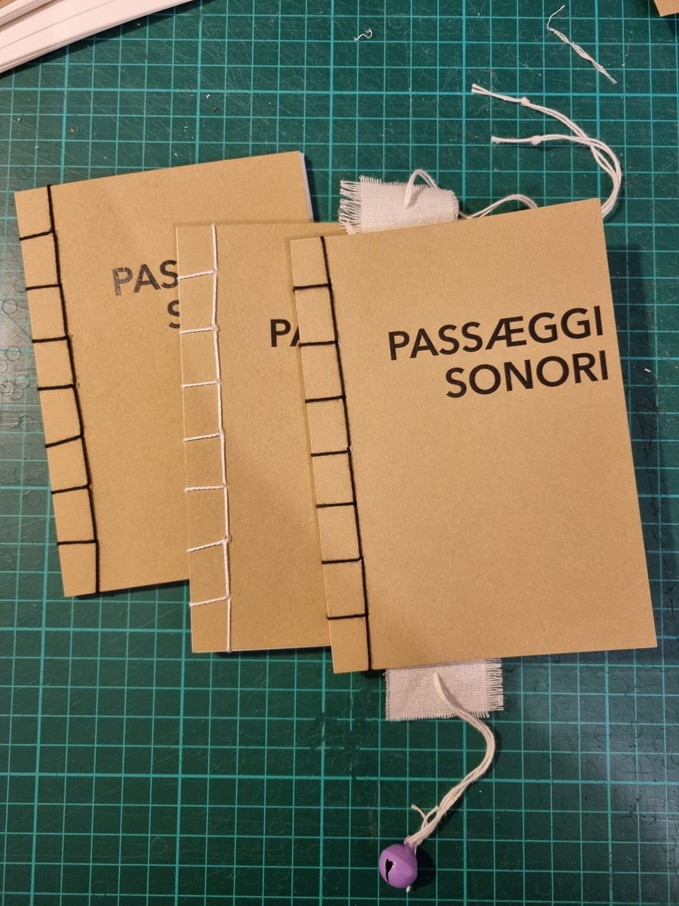
<br>
<p>RECITAL</p>
<img src="ae-recital.jpg">
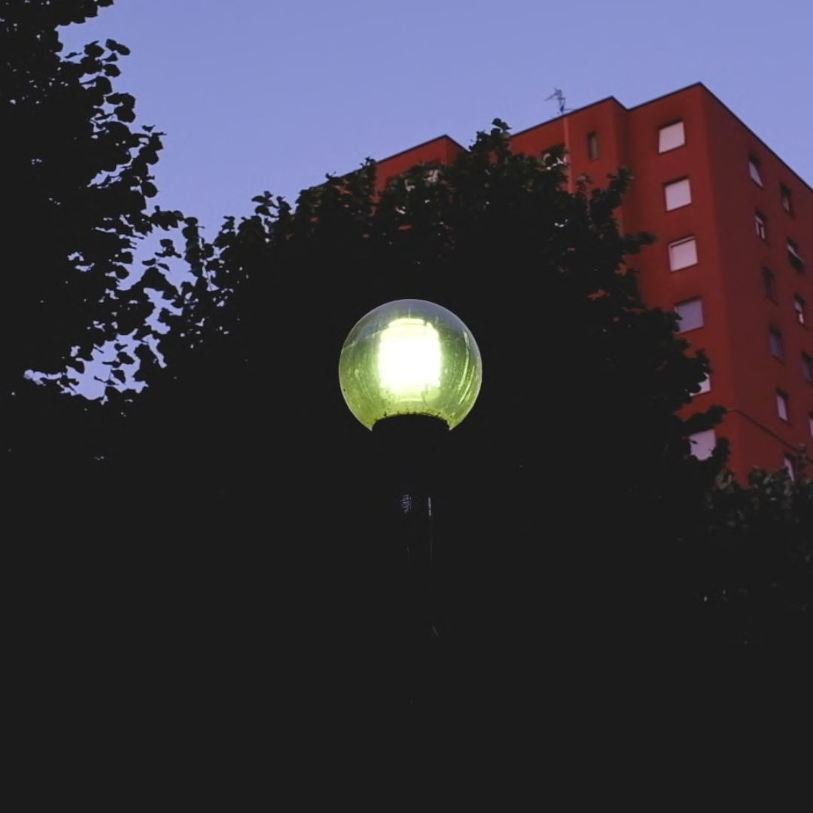
<a href="https://vimeo.com/1122287062?share=copy&fl=sv&fe=ci">RECITAL (video)</a>
<br>
<p>july</p>
<img src="ae-july.jpg">
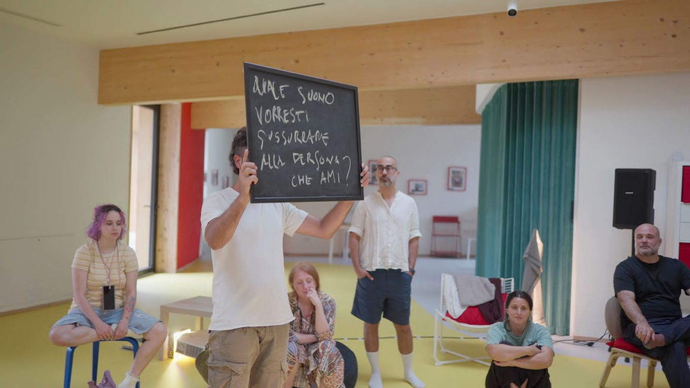
<a href="https://vimeo.com/1114943020?share=copy&fl=sv&fe=ci">video</a>
<br>
<h4>Sondæ</h4>
<p>Immersive installation guided by the sounds of the Gallaratese district in Milan.</p>
<p>13-14 September 2025, Teatro Piccolo Strehler – Scatola Magica</p>
<img src="ae-sondae.jpg">
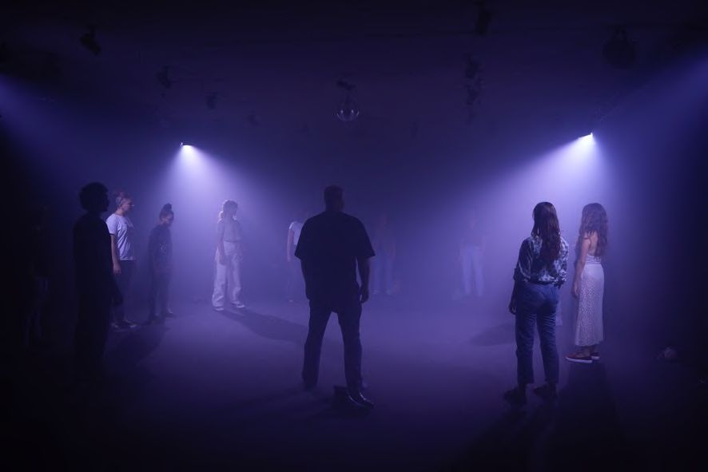
<a href="https://on.soundcloud.com/r2bPp9PwKFSB0wUhPF">Sondæ (stereo)</a>
<br>
<h4>In viaggio con Æ</h4>
<p>Sound exploration in Gallaratese, where listening guides urban discovery.</p>
<p>17 September 2025</p>
<img src="ae-in-viaggio.jpg">
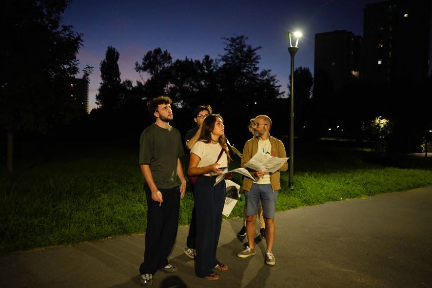
<a href="https://on.soundcloud.com/kKy0RJhTyLdCkgzOSU">Recordings</a>
<a href="Map.pdf" download>Map</a>
<p>map design by Edoardo Maria Manuguerra</p>
<h3>WILD:CARE</h3>
<p>2026/2027</p>
<br>
<p>WILD:CARE is a space for artistic research, experimental practice and transdisciplinary exchange, combining deep listening, the design and use of cultural probes and co-design practices to explore and come to know urban environments.
Developed across the metropolitan areas of Florence and Berlin, the project aims to empower young people as active citizens and to strengthen their relationship with urban space through sound-based practices.</p>
<img src="ae-wildcare-kit.jpg">
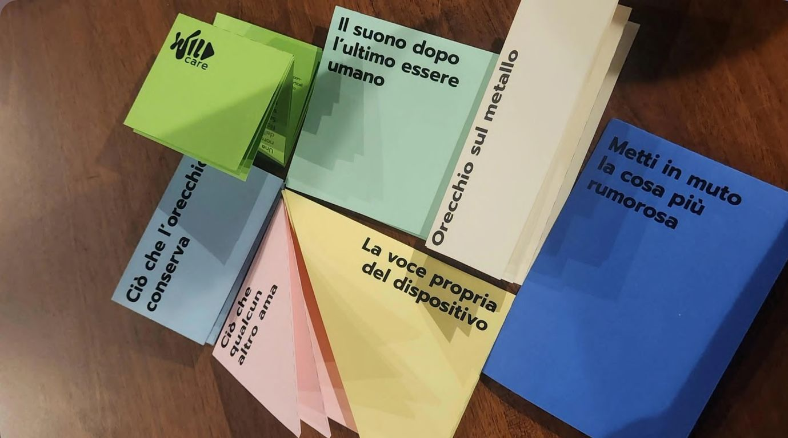
<a href="https://www.wildcareproject.org/">WILD:CARE</a>
<a href="https://docs.google.com/spreadsheets/d/1eHPNa5IF76cMrwucD7WWBUbGQZVoguLs7TxFp7MwN_U/edit?gid=1616260693">References</a>
<br>
<h4>Roadmap</h4>
<p>1. April 2026 – Peer-to-Peer Learning workshop
Training activities and the sharing of practices and methodologies among the project partners</p>
<p>2. July 2026 – WILD:CARE Training
Training and co-design activities with young people aged 18 to 30</p>
<p>3. October/November 2026 – Performance / pilot
Testing of the Listening Kit facilitated by the young Trainers, and co-creation of a site-specific performance</p>
<p>4. January/February 2027 – Final conference
Launch of the Listening Kit, presentation of the pilot results and the impact evaluation</p>
<br>
<p>WALK
Walk is the body in movement that opens the gaze and orients listening through spatial and exploratory practices (situationism, dérives, walkscapes, maps, and so on) that turn the act of walking into an instrument of research.</p>
<p>INSPIRE
Inspire is the imagination triggered by slowing down, drawing information from the actions that embrace it - Walk and Listen; it is also a space of exchange, fertile ground from which to draw inspiration, a channel for the transmission of knowledge.</p>
<p>LISTEN
Listen is listening as a practice of attention, relation and care. Sound practices make audible the relations between people, places and sonic territories, turning sound into an instrument of knowledge.</p>
<p>DESIGN
Design as a relational process that takes shape over time, transforming experiences, insights and materials gathered through collaborative practices into devices and tools that are open, adaptable and shareable.</p>
<br>
<h4>: CARE</h4>
<p>Within the methodological framework of WILD:CARE, care takes the form of an intentional act of self-reflection and slowing down through actions belonging to the socio-environmental sphere: a gesture that consciously runs counter to extractive logics and their constant demand for performativity.
How can we use co-design as the methodological glue of multidisciplinary practices - WILD - and of collective care?
Through tools such as the WILD:CARE Kit we aim to investigate devices that give back a shared and generative dimension of new forms of being together, of reflecting and slowing down, of sensing and cooperating with the other understood as the surrounding environment.</p>
<img src="ae-wildcare-training.jpg">
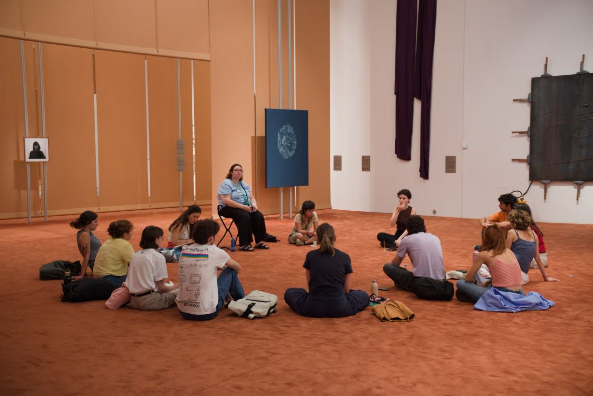
<p>Funded and supported by the European Union and Agenzia Italiana per la Gioventù. A project by TAB and Comparative Research Network, co-curated by Æ, in collaboration with Codesign Toscana and Centro Pecci Prato.</p>
<img src="ae-wildcare-credits.png">
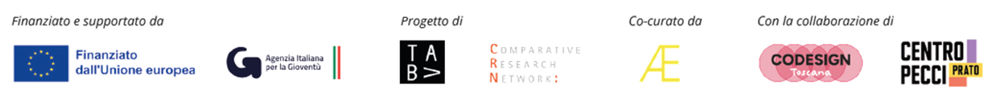
<h3>Concertazione</h3>
<p>26 August 2026, Palazzo de Grazia – Gorizia</p>
<img src="ae-concertazione-thread.jpg">
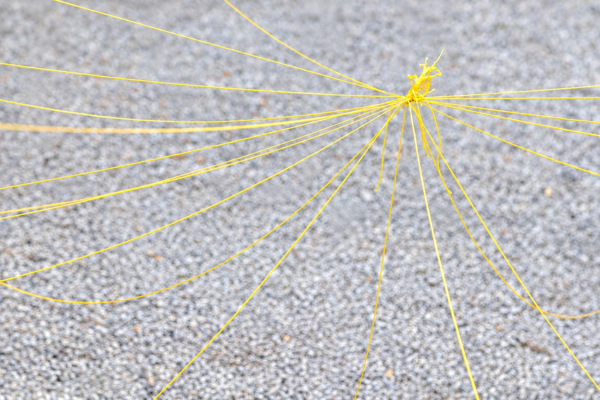
<p>A collective exploration of thresholds through paper-cup telephones used alone, in pairs, and as a group.</p>
<img src="ae-concertazione.jpg">
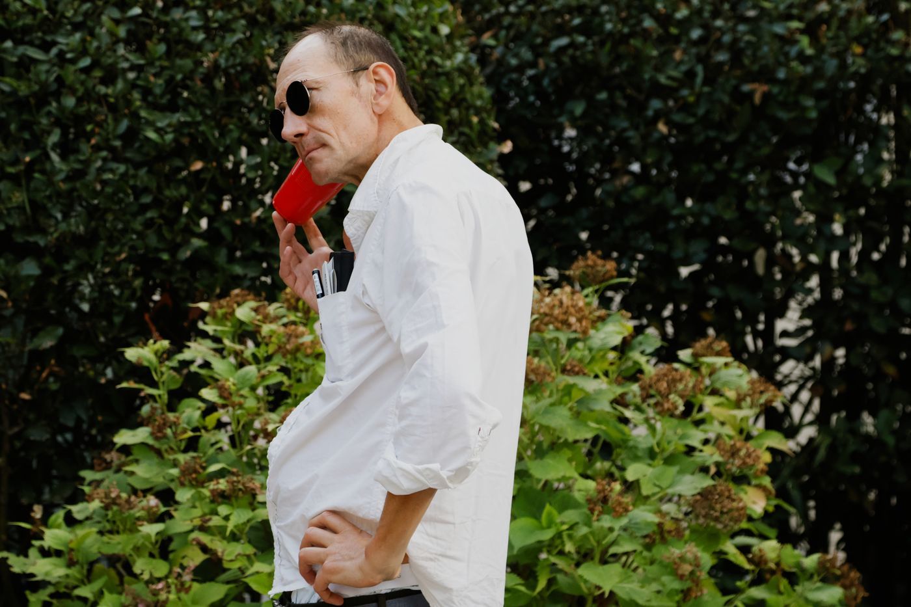
<a href="https://vimeo.com/1228509993">Video</a>
<br>
<p>A generative quadraphonic soundscape built from thresholds recorded by the public: each sound arrives recognisable, then becomes the ground for the next.</p>
<h3>Workshops</h3>
<p>2025/2026</p>
<br>
<p>Probing/Journaling
Construction and testing of a personal and collective listening booklet.</p>
<p>Listening and Exploration
Listening and neighbourhood exploration practices, sound analysis and awareness.</p>
<p>Public Space Performance
Performative practices and collaborative writing for the interpretation of urban space.</p>
<p>Critical Sound Mapping
Soundwalking and critical sound mapping practices for urban sense-making.</p>
<img src="ae-workshops.jpg">
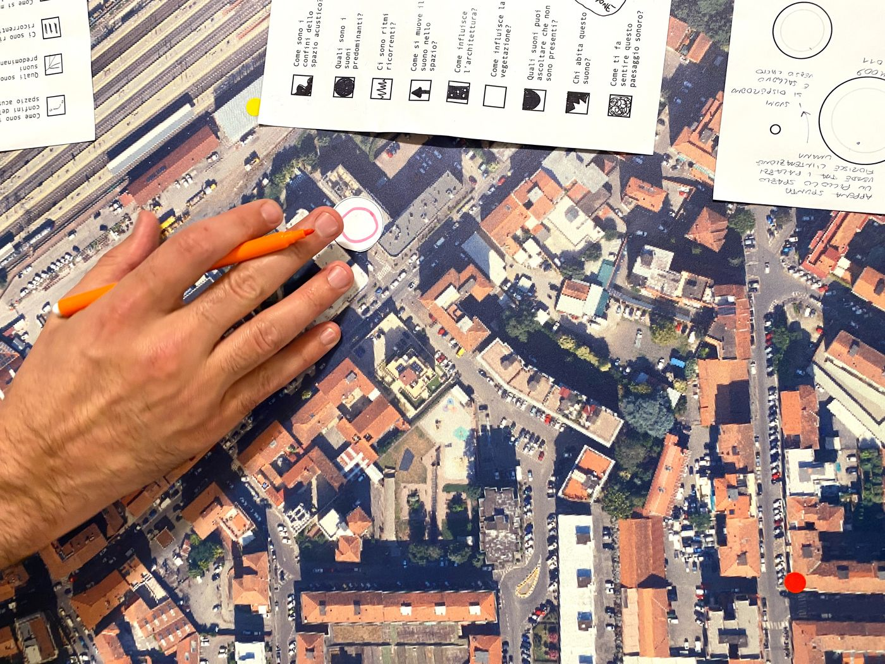